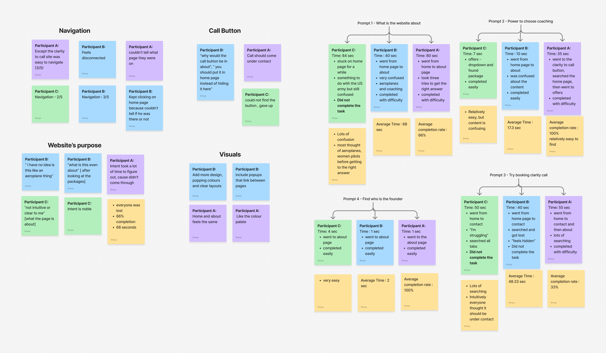
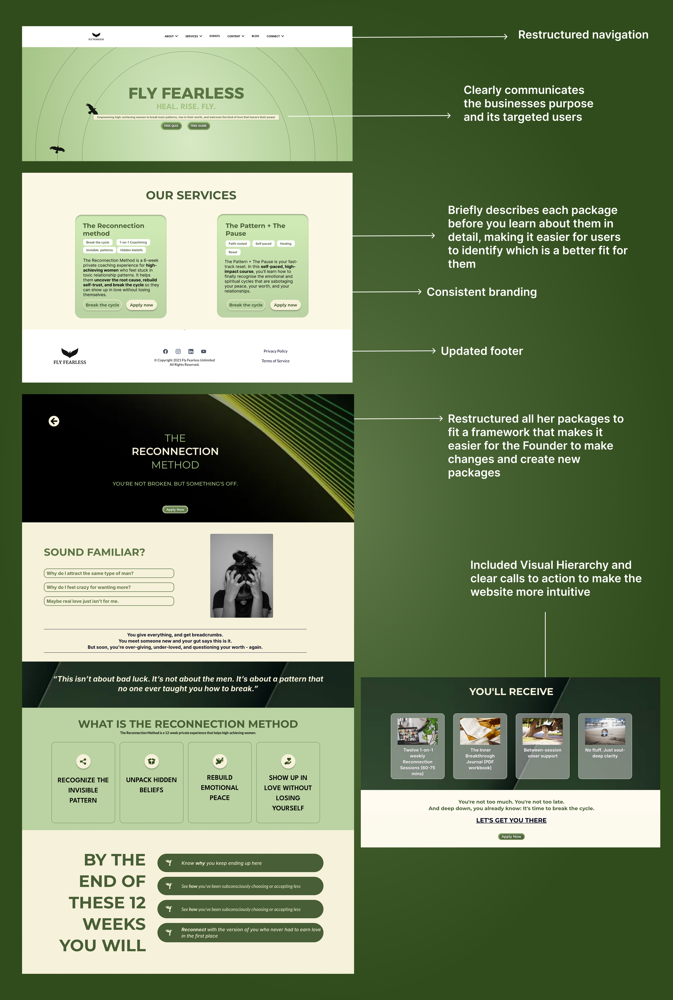

Context
Learning about Fly Fearless
Fly Fearless is a faith-based healing movement dedicated to helping women and service members break toxic cycles and reclaim emotional, spiritual, and relational wholeness. Founded by Army veteran Lindsay Errico, the brand fosters personal transformation through coaching, workshops, and digital content.
For the website redesign, I was first tasked with auditing the existing site and clarifying the project goals. Following my audit, I conducted user research by asking simple, targeted questions to uncover additional pain points, ensuring the redesign would address both organizational objectives and user needs.
Problem
Usability testing the existing website
I used the following questions to understand where pain points lie:
- Can you tell me what this website is about?
- Who is the founder and can you find her story?
- Book a clarity call.
- Find the “Power to Choose” coaching package.


Fig 1.1 and 1.2: Screenshots of the old website.

Affinity mapping the results to find actionable insights
Actionable insights:
- More intuitive navigation for faster completion
- Better communication of the brand
- Better information architecture
- Easy system for the founder to update
Process
Restructuring content
We went through multiple rounds of iteration before finalizing the new content structure. This process involved reviewing the existing website, identifying redundant or unclear sections, and deciding what needed to be added or removed to better communicate Lindsay’s work.
The new IA maps primary journeys—who Fly Fearless serves, how coaching works, and where to book—so visitors don’t have to hunt through overlapping pages. Each section on the diagram reflects a deliberate choice: fewer redundant labels, clearer groupings, and a path that mirrors how Lindsay talks about the work.

Fig 3.1: The new site architecture with each section.
New branding

Fig 3.2: New design system.
With the color palette finalized, we focused on building a cohesive design system—refining typography, visual hierarchy, and assets. We simplified the tagline to “Heal. Rise. Fly.” and aligned the visual identity and structure with our target audience: high-achieving women in the military.
In my conversations with Lindsay, she emphasized the need for a clean, sophisticated, and easy-to-navigate website.
Iteration and constant feedback
I started with low-fidelity wireframes in Figma, then moved to mid-fidelity prototypes to gather clearer feedback from non-UX stakeholders. Through weekly iterations with Lindsay and the PROJXON team, I refined layouts, interactions, and content before transitioning to build.
I built the live site in Ivorey CRM, which meant translating Figma specs into a tool I was learning on the job—templating sections, checking responsiveness, and adjusting content so Lindsay could keep the site updated without relying on engineering for every change.

Fig 3.3: Building and publishing in Ivorey.
Solution
The live site brings together clearer navigation, a stronger content hierarchy, and branding that reflects Fly Fearless’s mission—making it easier for visitors to understand the offer, find Lindsay’s story, and take action (book a call, explore coaching, and engage with resources).

Founder testimonial

Key takeaways
Productivity and proactiveness matter
After a particular experience with an intern from PROJXON consulting, I learnt that taking initiative and going above and beyond to maintaining consistent progress ensures the best outcomes for the project.
Don’t design from limitation—design where you want to be
This was something the CEO at PROJXON said to me that really stuck - Rather than limiting yourself to current and technical restrictions, design toward the experience you ultimately want users to have and figure out a way to get there.
Iteration beats perfection
Focusing on continuous iteration allows me to improve designs based on feedback, rather than waiting for a perfect first draft.
More case studies